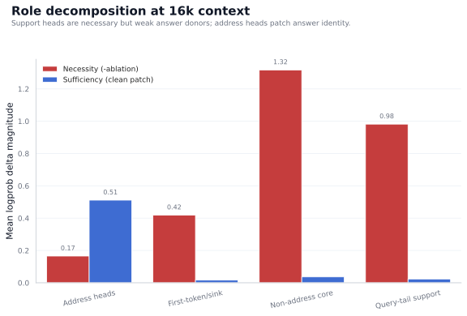
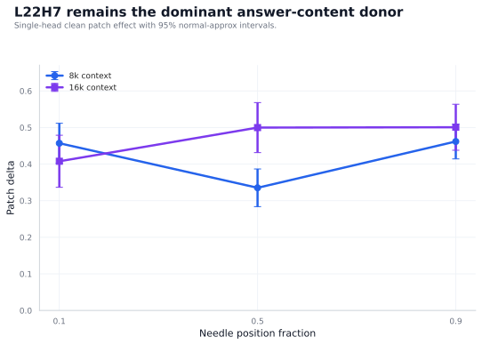
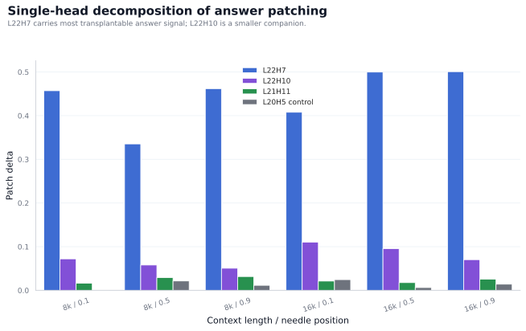
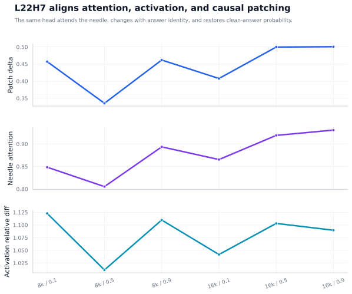
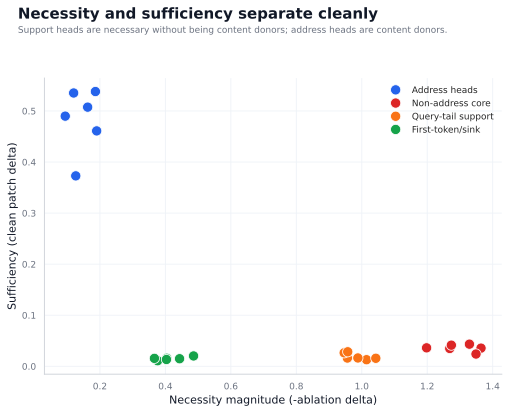
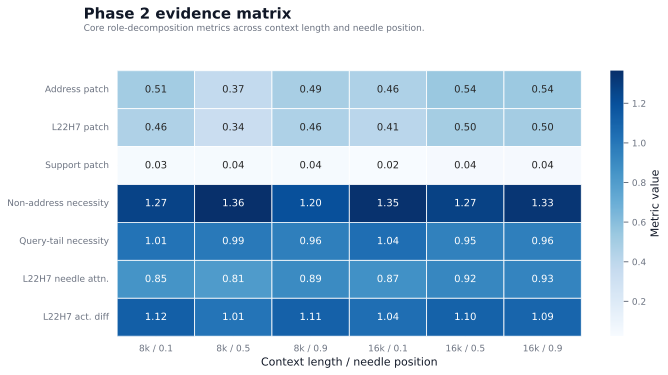

Generated from committed experiment artifacts. The figures are designed for the paper/report narrative: a stable role-decomposed semantic retrieval circuit with a dominant answer-content head and separate support heads.






| setting | target_tokens | needle_frac | n_examples | prompt_tokens_mean | prompt_tokens_min | prompt_tokens_max | clean_logprob | corrupt_clean_logprob | corrupt_gold_logprob | recovery_gap | answer_address_ablation | non_address_core_ablation | query_tail_ablation | answer_address_patch | non_address_core_patch | l22h7_patch | l22h7_patch_ci_low | l22h7_patch_ci_high | l22h7_positive_examples | l22h7_gold_attention | l22h7_needle_attention | l22h7_activation_relative_diff |
|---|---|---|---|---|---|---|---|---|---|---|---|---|---|---|---|---|---|---|---|---|---|---|
| 8k / 0.1 | 8192 | 0.1000 | 40 | 8192.0500 | 8191.0000 | 8193.0000 | -2.0122 | -5.1059 | -2.0432 | 3.0936 | -0.1625 | -1.2689 | -1.0146 | 0.5075 | 0.0349 | 0.4571 | 0.4025 | 0.5116 | 38 | 0.6648 | 0.8483 | 1.1228 |
| 8k / 0.5 | 8192 | 0.5000 | 40 | 8191.8500 | 8191.0000 | 8193.0000 | -1.9533 | -4.9325 | -1.9889 | 2.9792 | -0.1262 | -1.3643 | -0.9881 | 0.3729 | 0.0356 | 0.3353 | 0.2838 | 0.3868 | 39 | 0.5208 | 0.8053 | 1.0113 |
| 8k / 0.9 | 8192 | 0.9000 | 40 | 8191.9500 | 8191.0000 | 8193.0000 | -2.0298 | -5.1217 | -2.0581 | 3.0919 | -0.0940 | -1.1980 | -0.9561 | 0.4899 | 0.0361 | 0.4619 | 0.4143 | 0.5094 | 38 | 0.6897 | 0.8935 | 1.1098 |
| 16k / 0.1 | 16384 | 0.1000 | 40 | 16383.9750 | 16383.0000 | 16385.0000 | -2.0754 | -5.0887 | -2.1096 | 3.0133 | -0.1901 | -1.3490 | -1.0429 | 0.4610 | 0.0240 | 0.4077 | 0.3366 | 0.4789 | 38 | 0.5936 | 0.8653 | 1.0418 |
| 16k / 0.5 | 16384 | 0.5000 | 40 | 16384.0250 | 16383.0000 | 16385.0000 | -2.0278 | -5.1038 | -2.0568 | 3.0760 | -0.1862 | -1.2737 | -0.9462 | 0.5380 | 0.0414 | 0.4998 | 0.4314 | 0.5682 | 38 | 0.6659 | 0.9190 | 1.1031 |
| 16k / 0.9 | 16384 | 0.9000 | 40 | 16383.8750 | 16383.0000 | 16385.0000 | -2.1411 | -5.2728 | -2.1604 | 3.1317 | -0.1197 | -1.3289 | -0.9571 | 0.5352 | 0.0434 | 0.5007 | 0.4379 | 0.5636 | 38 | 0.6729 | 0.9308 | 1.0896 |
| setting | target_tokens | needle_frac | metric | group | mean | ci_low | ci_high | std | supporting_examples | n |
|---|---|---|---|---|---|---|---|---|---|---|
| 8k / 0.1 | 8192 | 0.1000 | single_head_patch | address_L22H7 | 0.4571 | 0.4025 | 0.5116 | 0.1759 | 38 | 40 |
| 8k / 0.1 | 8192 | 0.1000 | group_ablation | non_address_core | -1.2689 | -1.3231 | -1.2146 | 0.1750 | 40 | 40 |
| 8k / 0.1 | 8192 | 0.1000 | group_ablation | query_tail | -1.0146 | -1.0491 | -0.9800 | 0.1116 | 40 | 40 |
| 8k / 0.1 | 8192 | 0.1000 | group_ablation | answer_address | -0.1625 | -0.1898 | -0.1352 | 0.0881 | 39 | 40 |
| 8k / 0.5 | 8192 | 0.5000 | single_head_patch | address_L22H7 | 0.3353 | 0.2838 | 0.3868 | 0.1662 | 39 | 40 |
| 8k / 0.5 | 8192 | 0.5000 | group_ablation | non_address_core | -1.3643 | -1.4126 | -1.3160 | 0.1559 | 40 | 40 |
| 8k / 0.5 | 8192 | 0.5000 | group_ablation | query_tail | -0.9881 | -1.0209 | -0.9553 | 0.1058 | 40 | 40 |
| 8k / 0.5 | 8192 | 0.5000 | group_ablation | answer_address | -0.1262 | -0.1535 | -0.0988 | 0.0883 | 38 | 40 |
| 8k / 0.9 | 8192 | 0.9000 | single_head_patch | address_L22H7 | 0.4619 | 0.4143 | 0.5094 | 0.1536 | 38 | 40 |
| 8k / 0.9 | 8192 | 0.9000 | group_ablation | non_address_core | -1.1980 | -1.2408 | -1.1553 | 0.1378 | 40 | 40 |
| 8k / 0.9 | 8192 | 0.9000 | group_ablation | query_tail | -0.9561 | -0.9875 | -0.9246 | 0.1015 | 40 | 40 |
| 8k / 0.9 | 8192 | 0.9000 | group_ablation | answer_address | -0.0940 | -0.1164 | -0.0716 | 0.0723 | 38 | 40 |